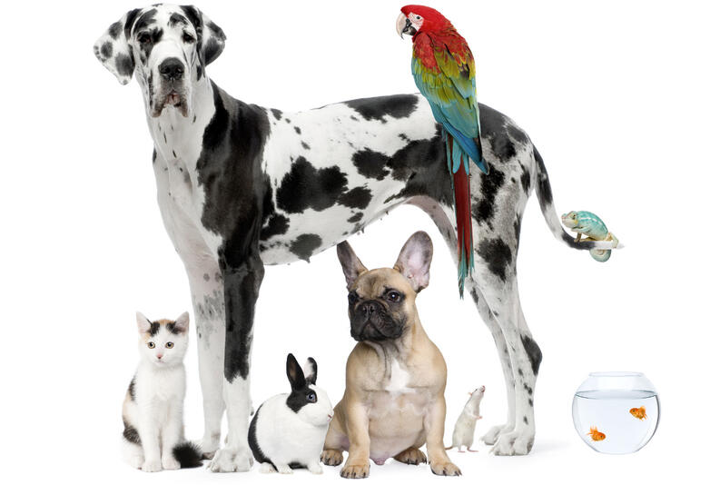

Historia (Inicios)
El perro es una de las especies más antiguas en ser domesticada y adoptada como mascota por el ser humano.
La domesticación de los animales, paso obligado para contar con estas espacies como mascotas, ha devenido en un proceso gradual, que posiblemente comenzó en la Edad de Piedra (13.000 A.C). La primera evidencia de domesticación de animales se menciona en la ciudad bíblica de Jericó en Palestina unos 12.000 a. C, donde perros y cabras eran adoptados como mascotas.
La motivación para la domesticación de animales no es exacta, pero se cree que comenzó cuando el ser humano se dio cuenta de que necesitaba establecer lazos con la naturaleza para su supervivencia y desarrollo. Se estima que los perros, una de las primeras especies animales domesticadas, han sido criados como animales de compañía por alrededor de 10.000 años, mientras que alrededor del año 3500 a. C. comenzó la domesticación de gatos en Egipto.
Una mascota es un animal domesticado que se conserva con el propósito de brindar compañía o para disfrute de quien lo posee. Son escogidos por su comportamiento, adaptabilidad y por su interacción con los seres humanos. Por otra parte, es innegable que las mascotas consecuencias positivas a la salud de sus dueños, ya que el cuidado diario hace olvidar a muchas personas otro tipo de preocupaciones, evita la depresión y las hace sentir útiles. Los animales de compañía más populares son el perro y el gato, pero también encontramos las aves y los peces.
La compañía de los animales siempre evoca ternura, compañía y amistad, cualidades que se intensifican cuando la soledad busca filtrarse en la vida de las personas; es en estos momentos cuando la mascota adquiere un papel más importante, al sentirlo parte de la familia y aún más, como un amigo. La mayoría de las personas muestran una actitud positiva, de agrado a través de su relación con una mascota o animal de compañía, sobre todo aquellos que sufren problemas de tipo psicológico o físico.
Un animal de compañía se adapta al ambiente de un ser humano sin importar su naturaleza, se adhiere a un grupo, familia o sociedad y se caracteriza por ser amigable. La mayoría de estos animales se convierten en domésticos si la persona con la que comparten un hogar les enseña buenos modales en la convivencia diaria, sin dejar a un lado su naturaleza animal.
Tabla nutricional
| Tabla Nutricional | ||||
|---|---|---|---|---|
GRASA |
A partir de ella se obtienen los ácidos grados esenciales necesarios para mantener la piel y el pelo saludables; además, son fuente de energía e interfieren en el transporte de las vitaminas liposolubles. |
Los cachorros y las razas pequeñas requieren más grasa que los adultos, geriátricos o con problemas de sobrepeso. |
En la actualidad, es fácil encontrar en el mercado productos especializados (bajos en calorías o light) para animales con sobrepeso, que contienen 6 por ciento de grasa (o menos), mientras que para perros normales, el porcentaje de grasa es 11 por ciento normalmente. |
|
FIBRA |
Muy poco se conoce con certeza sobre el tamaño del universo. Puede tener una longitud de billones de años luz o incluso tener un tamaño infinito. Un artículo de 2003 dice establecer una cota inferior de 24 gigaparsecs (78 000 millones de años luz) para el tamaño del universo, pero no hay ninguna razón para creer que esta cota está de alguna manera muy ajustada | |||
PROTEÍNA | Es uno de los factores más importantes a la hora de elegir el alimento de su amigo peludo. Los perros cachorros y jóvenes necesitan mucha más proteína ya que su metabolismo es más rápido que el de un adulto, y necesitan mucha más energía y masa muscular. | Los perros adultos, por el contrario, ya han alcanzado el tamaño y el peso normal, por lo cual no requieren tanta energía y su metabolismo es un poco más lento, incluso el de las proteínas. Sin embargo, las proteínas no solo son necesarias para un crecimiento adecuado, sino que son componentes importantes del sistema inmunológico, por lo cual el concentrado debe contener una proporción adecuada para proteger a su mascota de bacterias o virus. |
||
HUMEDAD |
Es la cantidad de agua que contiene el concentrado después del procesamiento. Entre más porcentaje de humedad tenga el alimento, menor será la calidad del mismo, ya que la cantidad de nutrientes será menor. | |||
CENIZAS |
Se refiere a la cantidad de minerales que contiene el alimento, ya que, por tratarse de unidades tan pequeñas, no se especifica el porcentaje de cada uno. Estos son los que mantienen saludable los huesos y el pelo, mejoran la visión, ayudan al desarrollo del cerebro y al sistema inmune. | |||
DEFICIT DE LAS CENIZAS |
Puede producir daños oculares |
Enfermedades cardiacas y del sistema nervioso. |
||